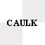
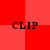
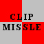
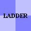
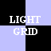
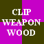
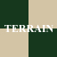
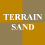
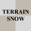
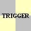

© 2003 Splash Damage, Ltd. All Rights Reserved.

| Wolfenstein: Enemy Territory Documentation © 2003 Splash Damage, Ltd. All Rights Reserved. |
|
|  | A structural and invisible shader. Used to create the structural 'hull' of the BSP. |  | Standard Clip brush which will block players. No bullets or projectiles are blocked. |
| Forces additional portals in the BSP. |  | Based on the standard clip brush. Blocks all projectiles. | |
|  | Allows players to climb up or down. Acts like player clip. It must be present on all sides of the brush. | Based on standard clip brush. Blocks all projectiles and produces a metal sound when hit by bullets. | |
|  | Defines a volume where the lightgrid is active. Any space outside is not calculated. |  | Based on standard clip brush. Blocks all projectiles and produces a wood sound when hit by bullets. |
| Does not draw in game and is non solid. Used for single sided brushwork like alpha channel textures. |  | Terrain metashader with grass step sound. | |
| Used by brushwork entities for defining their origin point in the map. |  | Terrain metashader with gravel step sound. | |
| Skip is a nonsolid, invisible, structural shader that does not create BSP splits or portals. Used in conjunction with antiportals or hint faces. |  | Terrain metashader with snow step sound. | |
|  | Used on brushwork trigger entities. It's not drawn and is not solid. |
Please note that this is not a complete list of texture/shaders from the common directory but a summary of the most useful ones for producing a map for Enemy Territory.